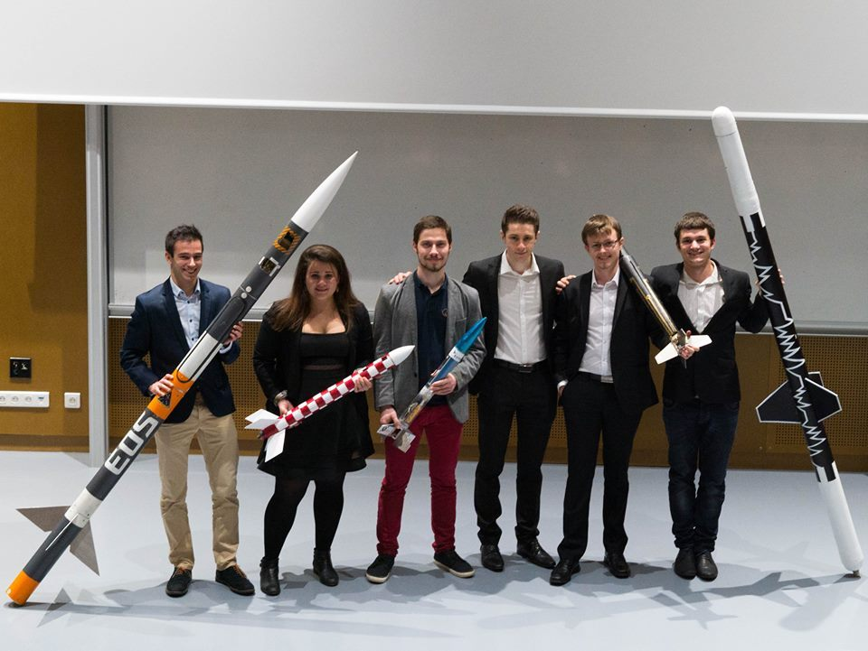

Looking up to the sky

What is ESO ?
Hyperion is an association of ESTACA founded in 2019. It’s a team of students passionate about the Hyperloop. The Hyperloop project is directed by Elon Musk, and plans for a High-speed train using magnetic sustentation. Each year SpaceX, one of his companies, organizes the “SpaceX Hyperloop Pod Competition”, where the main goal is to design a Hyperloop capsule that meets specific specifications. You can learn more about this competition below. Hyperion although not being the biggest, nor the most famous, is a serious contender to the competition with huge partnerships like with Dassault Systems, LGM Group and Cité des Sciences et de l’industrie.
The association also regularly creates competitions open to all the students of the ESTACA with prizes to win in order to help them progress in the Hyperloop contest, like the Gaston Competition. More About later.
Hyperion is composed of 40 members divided in different sections. There is the office which leads the association, the Structure & Aerodynamics division, the Electromagnetism division but also the Embedded systems, the Test and the Communication and Sponsors divisions.
The large number of members is due to the fact that this association is not only reserved to the students who have chosen the train specialization but it’s open to everyone from the first to the fifth year whatever the specialization. The only requirement is to be of course motivated and passionate by the project.
Let's take a look back
Estaca space odyssey is a student association of the Estaca transports engineering school, founded in 1992 and is with that one of the oldest association still opened today.
Quick history of success from the last years :
In 2012 they wonned the C’Space price, given by the CNES for their experimental rocket “odyssey 52”. One year later, in 2013, they wonned to prices, at first the 23rd space and industry price, given by Thales Alenia Space, for their experimental rocket “Florizar”. And they received the “IBM-Aeroclub de France” price for technological Innovation for their RLPS project. Two years later in 2015 they wonned the 24th space and industry price, from science planet thanks to their experimental “Ajax” rocket. And more recently the obtained the 25th space and industry price from Arianespace, with the “Matriochka” experimental rocket.
Some key numbers
Since their creation in 1992, they have done more than 150 projects, with an extraordinary success rate of about 87%. Alone in 2018/2019 they had 11 projects they where working on. And they can count on the help of over 111 active members that follow them into their breathtaking projects and ideas since 2019.
Not only do Estaca students believe in their ideas, but also many big compagnies that propose them interesting partnerships. We can so name Ressort GEFI (their first partner in 1992) , Safran, CNES, Zodiac Aerospace, Ariane group and more…
Projects
ESO is an association with many different projects but the major on-going one is the project POLARIS.
The Polaris project is an international project. It was launched last year and has over 100 members from 17 countries. The project is non-profit, open-content, and supervised by the Costa Rican start- up AREX. The goal of the project is to design and prototype in two years a rover capable of flying over the surface of the moon Titan with a balloon and landing there. The construction of the prototype of the rover began in the Costa-Rican partner laboratories during the summer of 2021, the project is to present it to the International Astronautical Congress in Paris in September 2022.
In ESO The Polaris project is divided into two categories of team: technical teams (systems, structures, electronics, propulsion, chemistry and heat transfer) and support teams (financial, hosting and travel, communication). If it is open to every student in ESTACA there is some requirements like a good English level, writing a motivation letter and an essay about space.
This is not the only project of the association there is many other minor projects like “Mini-fusées”, “Fusée Sonde” and “Prométhée”.
As a brief presentation, “Mini-fusées” has for main goal to create little rockets by little group of students and to launch it at the end of the year during the “C Space” event. “Fusée Sonde” is 4 years where students from the 4th and 5th years built a full rocket from 5metters length which is predicted to going to beat the student European record of altitude when it will be launch by the “Prométhée” project.
Interview
fqui fgus efoq ushfqs hfqhbfk qsflj qsbf jlqsb flj qsbf ljqsbfl jqsbfl q sbfjlq sbf ljqsbfj lqsbfqui fgus efoq ushfqs hfqhbfk qsflj qsbf jlqsb flj qsbf ljqsbfl jqsbfl q sbfjlq sbf ljqsbfj lqsbffqui fgus efoq ushfqs hfqhbfk qsflj qsbf jlqsb flj qsbf ljqsbfl jqsbfl q sbfjlq sbf ljqsbfj lqsbffqui fgus efoq ushfqs hfqhbfk qsflj qsbf jlqsb flj qsbf ljqsbfl jqsbfl q sbfjlq sbf ljqsbfj lqsbff
fqui fgus efoq ushfqs hfqhbfk qsflj qsbf jlqsb flj qsbf ljqsbfl jqsbfl q sbfjlq sbf qs hfqhbfk qsflj qsbf jlqsb flj qsbf ljqsbfl jqsbfl q sbfjlq sbf qs hfqhbfk qsflj qsbf jlqsb flj qsbf ljqsbfl jqsbfl q sbfjlq sbf ljqsbfj lqsbfqui fgus efoq ushfqs hfqhbfk qsflj qsbf jlqsb flj qsbf ljqsbfl jqsbfl q sbfjlq sbf ljqsbfj lqsbffqui fgus efoq ushfqs hfqhbfk qsflj qsbf jlqsb flj qsbf ljqsbfl jqsbfl q sbfjlq sbf ljqsbfj lqsbffqui fgus efoq ushfqs hfqhbfk qsflj qsbf jlqsb flj qsbf ljqsbfl jqsbfl q sbfjlq sbf ljqsbfj lqsbff